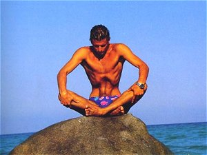
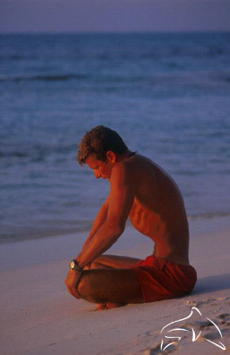

NHK のあさイチで腹横筋を鍛えてウエストまわりの膨らみを引き締めるドローインというのが紹介されていたのですが、なんか見覚えがあるし、トレーニング方法も聞き覚えがあるなぁ、と思って気がついたのがこれ。


写真は Free Diver の Umberto Pelizzari ( 今でも現役なのかしらん？ )。
これはヨガの呼吸法を応用したトレーニングで、彼はこのトレーニングで腹横筋を収縮させて腹部の内蔵と横隔膜を押し上げ、肺を収縮させているのですね。なんでこのようなことをするのかというと、このトレーニングを行うことで横隔膜が柔軟になるらしいのです。
フリーダイビングは閉塞潜水ですから、水深が大きくなるにつれて水圧も増えてゆき肺の体積が縮んでゆきます。肺がスムースに縮むように、そして胸郭から肺組織が剥離して重大な事故にならないように、横隔膜を柔軟にしているわけですね。
自分はここまで腹部を縮小することはできませんが、まねてトレーニングはしてました。これ、たしかにウエスト・サイズは縮むんですよねぇ。でも体脂肪率が変るわけではないので念のため。
この人のイラストはなんだか味わい深くて好きだなぁ。
ふぁずかしガール……ｸｽｯ
退院の話もそろそろ出てきそうな昨今ですが、まだ入院中です。今日の日記は一時帰宅中に書いています。今日もとりあえずリハビリテーションの経過報告をしてみようかと思います。
つい先日、病院からの一時帰宅のときに公共交通機関を利用して帰宅してみました。問題が発生しそうな以下のポイントを重点的にチェックしなが移動してみました。
極力独力での移動が可能な条件設定を念入りに行ったものの、これだけのことができたので、退院後の単独外来通院の可能性も見えてきました。さらには単独で自宅から外出して買い物をするというミッションをコンプリートしたので、自助生活の道も見えてきたと言えそうです。